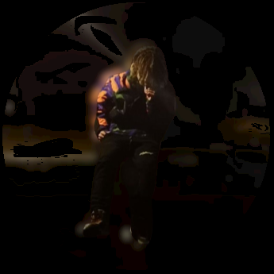

<div class="row">
  <div class="col-lg-6 col-12">
    <div class="glavno" style="height: 50vh">
      
      <!--  <div class="flxp" color="warn">FLXP</div>-->
    </div>
    <button
      mat-raised-button
      color="primary"
      class="mywork"
      [routerLink]="Router"
      (click)="MenjacRoutera()"
    >
      {{ Router2 }}
    </button>
  </div>
  <div class="col-lg-6 col-12 boja" [@routeAnimations]="prepareRoute(outlet)">
    <router-outlet #outlet="outlet"></router-outlet>
  </div>
  <app-vrste class="telefon"></app-vrste>
  <app-futer class="telefon"></app-futer>
</div>
